Design Responsivo
Introdução
Em 1977, com o “boom” do computador pessoal Apple II, lançado pela fabricante Apple, muitas pessoas
sonhavam em possuir o novo marco da tecnologia em sua casa. Desde então, os computadores pessoais
dividiram o protagonismo dos eletrônicos mais consumidos com tecnologias mais acessíveis e compactadas,
que vão desde relógios a smartphones.
Com o avanço tecnológico, diferentes modelos de aparelhos para acessarem o mesmo sistema surgiram e, com
eles, diferentes de tamanhos de tela foram criados, obrigando assim a programadores pensarem em maneiras
distintas de tornar a mesma aplicação flexível a todos, assim surgindo o conceito de design responsivo.
Conceitos
O Web Design Responsivo (RWD, ou apenas design responsivo), consiste na utilização de técnicas para
estruturar interfaces de sites, com o intuito de tornar o layout flexível e adaptável, harmonizando a
resolução em que o site está sendo visualizado, independente de qual aparelho está sendo usado para
fazê-lo.
O conceito busca, além disso, atender as demandas de projetos de cada usuário, dando acessibilidade a
uma grande variedade de dispositivos, tornado seu acesso ao site uma experiência com boa utilização e
performance.
Seu surgimento ocorreu em 2010, quando um desenvolvedor chamado Ethan Marcotte criou o artigo
“Responsive Web Design” para o blog A List Apart, em que falava das suas preocupações com a experiência
de navegação daqueles que utilizavam aparelhos menores para acessar a web. Na época já era notável o
número de usuários mobile que acessavam o conteúdo online, mostrando assim a necessidade de empresas
garantirem a boa performance para esses aparelhos.
Técnicas
Existem diversas técnicas que podem ser usadas parar criar designs responsivos, algumas delas estão descritas abaixo:
Media Queries (Pontos de Interupção)
São trechos de código CSS que permitem aplicar estilos específicos com base nas características do dispositivo, como largura da tela, altura da tela, orientação e resolução. Isso permite adaptar o layout e os estilos para diferentes dispositivos.
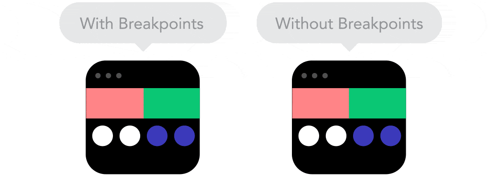Unidades Relativas
São formas de medir elementos em um layout web usando porcentagens, em vez de valores absolutos como pixels. Isso permite que os elementos se ajustem dinamicamente ao tamanho da tela do dispositivo do usuário.
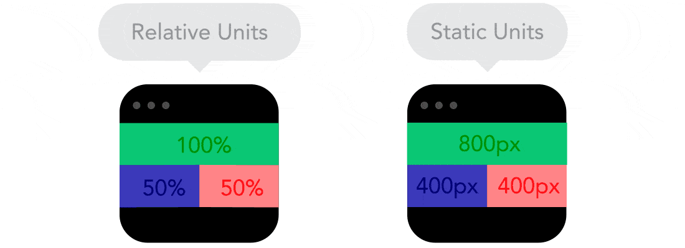Valores Mínimos e Máximos
São limites definidos para o tamanho dos elementos em um layout responsivo. Isso garante que esses elementos não ultrapassem um determinado tamanho, ajudando a manter a consistência e legibilidade em diferentes dispositivos.
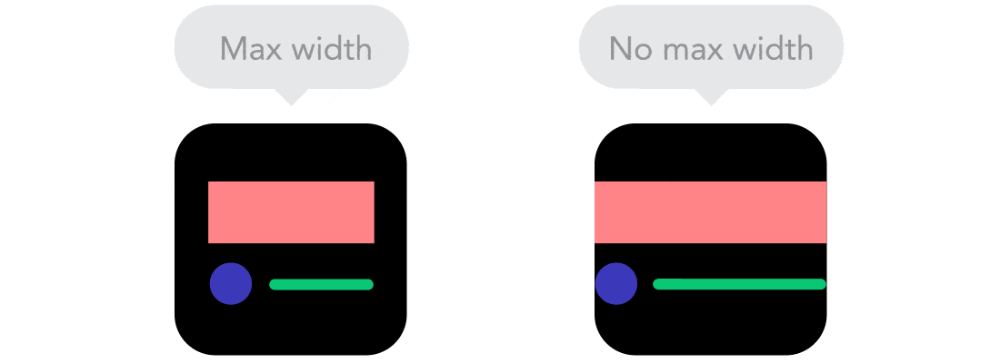Objetos Aninhados
Refere-se a manter elementos HTML “encapsulados” dentro de outros elementos. Isso ajuda a organizar e controlar o layout de uma página da web, especialmente em designs responsivos.
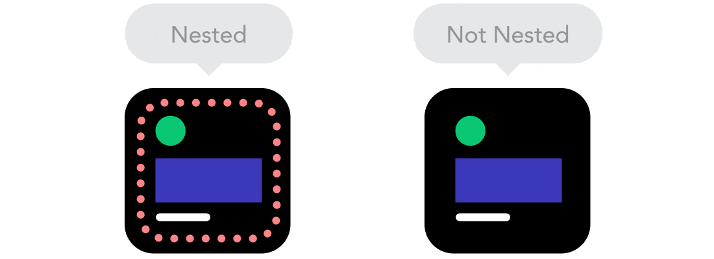Desktop ou Mobile First?
Apesar de tecnicamente não existir diferenças entre iniciar um projeto pela tela maior ou menor, existem algumas vantagens e desvantagens:
- Melhor experiência dos usuários mobile;
- Maior alcance;
- Melhor desempenho nas buscas do Google;
- Economia de tempo e recurso.
Fontes web ou do Sistema
É a escolha entre usar fontes personalizadas carregadas de servidores externos (fontes web) ou fontes pré-instaladas nos dispositivos dos usuários (fontes do sistema). Essa decisão afeta o desempenho e a consistência visual do design.
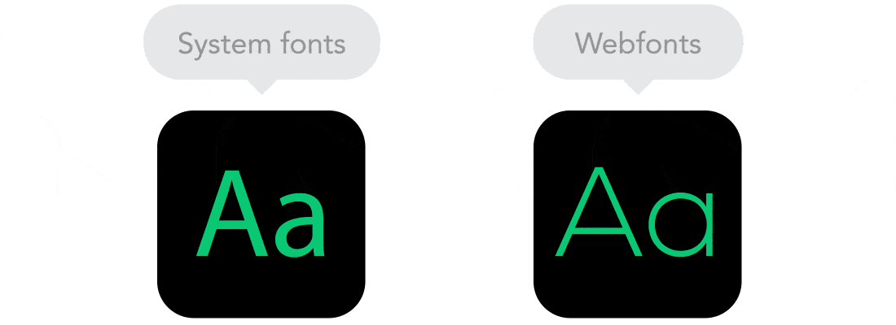Imagens Bitmap X Vetores
Existem dois tipos de imagens usadas na web: imagens bitmap e imagens vetoriais. As imagens bitmap, como JPG ou PNG, são feitas de pixels e são boas para fotos e detalhes complexos. Já as imagens vetoriais, como SVG, são feitas de instruções matemáticas e são ideais para gráficos simples e ícones, porque podem ser redimensionadas sem perder qualidade.
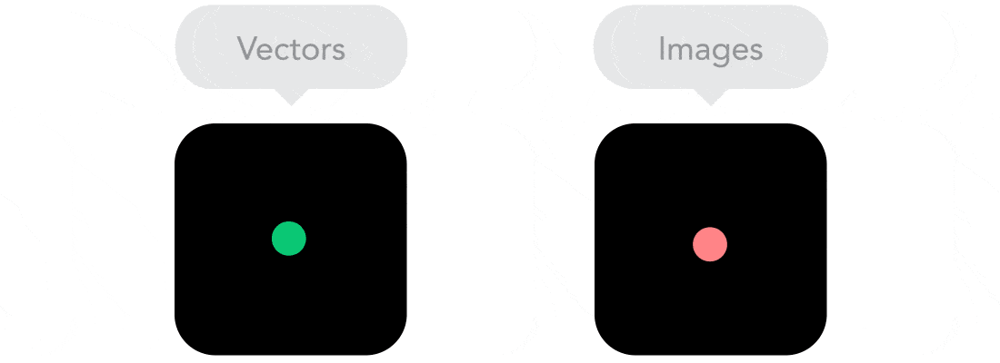Frameworks
Bootstrap
O Bootstrap é reconhecido como um dos frameworks mais populares para o desenvolvimento responsivo. Desenvolvido pela equipe do Twitter, é amplamente adotado em diversos projetos, como sites, e-commerce e sistemas em geral. Representa uma escolha vantajosa, no entanto, é importante considerar os objetivos de projeto.
Wirefy
O Wirefy oferece uma abordagem simplificada e possui uma curva de aprendizado acessível, embora seja menos popular. Ele disponibiliza recursos como paginação, formulários e slideshow.
Skeleton
Por sua vez, o Skeleton se destaca por sua simplicidade e abordagem minimalista, fornecendo apenas os elementos essenciais, como formulários, botões, tipografia e grid. Sua curva de aprendizado é acessível, tornando-o ideal para o desenvolvimento de funcionalidades básicas.
Less Framework
O Less Framework, por ser mais simples em comparação aos outros, é uma escolha ideal para desenvolvedores que buscam criar designs únicos e responsivos. Focado apenas no grid responsivo, é uma opção leve e fácil de usar.
Foundation
O Foundation é considerado um dos frameworks mais avançados do mercado, permitindo o desenvolvimento de sites com uma abordagem "mobile first", que podem ser adaptados para telas maiores. Sua capacidade de prototipagem rápida e versatilidade o tornam uma escolha popular entre os desenvolvedores.
Responsivos
The New York Times
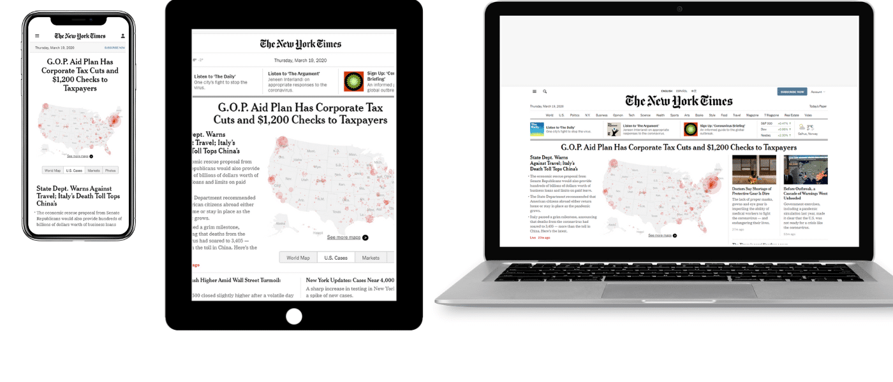Esauce
Friends of the Web
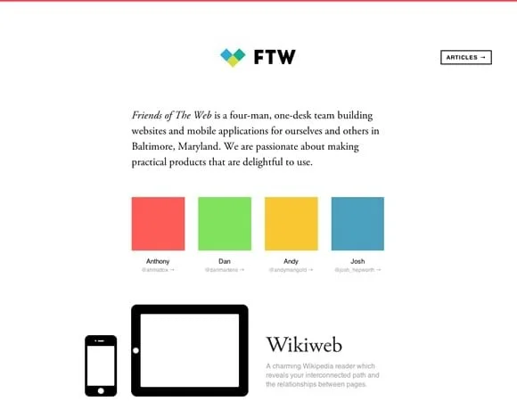 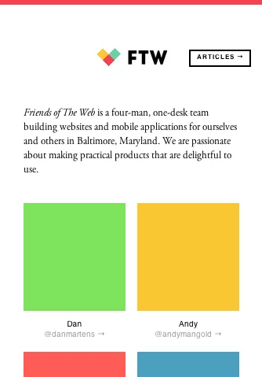Não responsivos
Os sites abaixo, apesar de se adaptarem (em sua maioria) aos dispositivos mobiles, não são responsivos, são web apps, ou seja, ao entrar com um dispositivo mobile, o usuário é redirecionado para a aplicação feita para aquele tipo de aparelho.
Esauce
YouTube
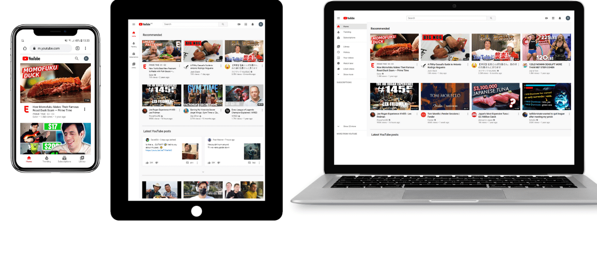Americanas
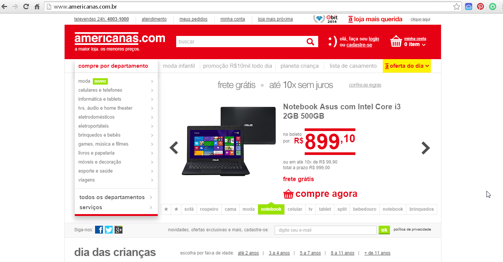 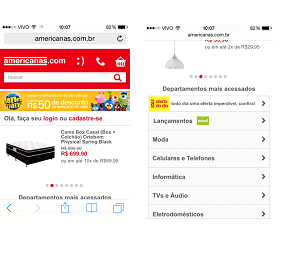Conclusão
As técnicas mencionadas são apenas algumas das muitas ferramentas disponíveis para criar designs responsivos. No entanto, o verdadeiro objetivo por trás de um design responsivo vai além das técnicas utilizadas. Trata-se de proporcionar uma experiência de usuário consistente e acessível, independentemente do dispositivo ou tamanho da tela. O design responsivo não é apenas uma tendência iniciada em 2010, mas sim uma necessidade no cenário atual, onde os usuários acessam conteúdo de uma ampla variedade de dispositivos. Portanto, ao criar um design responsivo, é essencial pensar não apenas nas técnicas, mas também nos princípios fundamentais de usabilidade e acessibilidade para garantir uma experiência de alta qualidade para todos os usuários.
Referências
-
9 princípios básicos do web design responsivo. Disponível em: <https://rockcontent.com/br/blog/web-design-responsivo/>. Acesso em: 2 mar. 2024.
-
21 Exemplos de sites responsivos - Finalizart. Disponível em: <https://finalizart.com/desenvolvimento-web/21-exemplos-de-sites-responsivos/>. Acesso em: 2 mar. 2024.
-
Configurando o viewport no HTML. Disponível em: <https://www.designresponsivo.com.br/configurando-o-viewport-no-HTML/>. Acesso em: 2 mar. 2024.
-
Design responsivo: 5 frameworks que facilitarão sua vida. Disponível em: <https://pt.linkedin.com/pulse/design-responsivo-5-frameworks-que-facilitar%C3%A3o-sua-vida-gustavo-braga?trk=articles_directory>. Acesso em: 3 mar. 2024.
-
Design responsivo para a web – como adaptar um site a celulares e tablets. Disponível em: <https://www.freecodecamp.org/portuguese/news/design-responsivo-para-a-web-como-adaptar-um-site-a-celulares-e-tablets/#:~:text=A%20tag%20meta%20viewport%20e>. Acesso em: 2 mar. 2024.
-
O Guia para Iniciantes em Design Responsivo da Web (Amostras de Código e Exemplos de Layout). Disponível em: <https://kinsta.com/pt/blog/design-responsivo-web/>. Acesso em: 2 mar. 2024.
-
SALLES, F. Do primeiro computador do mundo até hoje: a história da Informática. Disponível em: <https://www.buscape.com.br/pc-computador/conteudo/primeiro-computador-historia-da-informatica>. Acesso em: 2 mar. 2024.